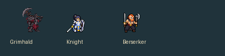
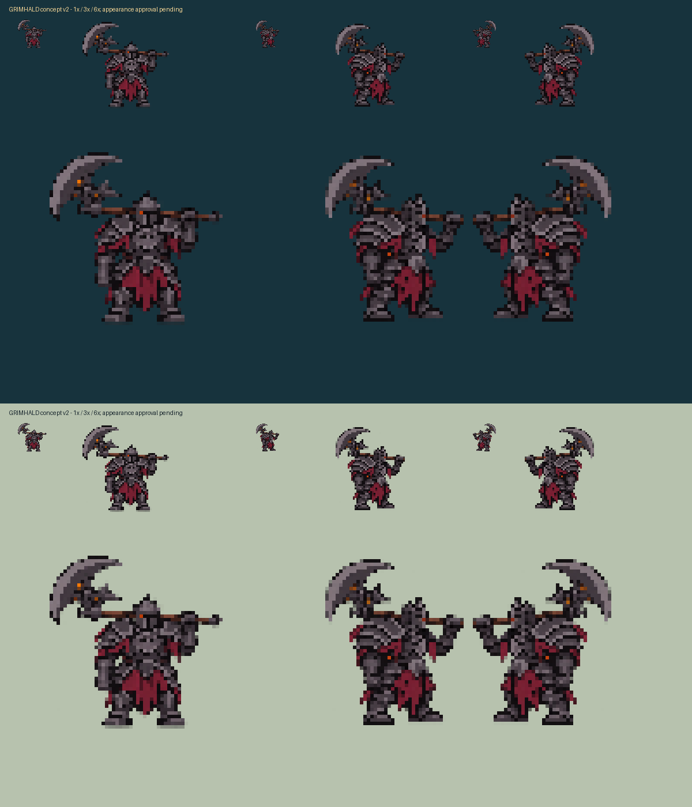
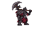
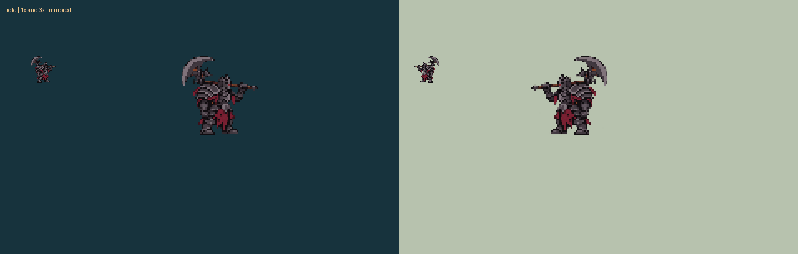
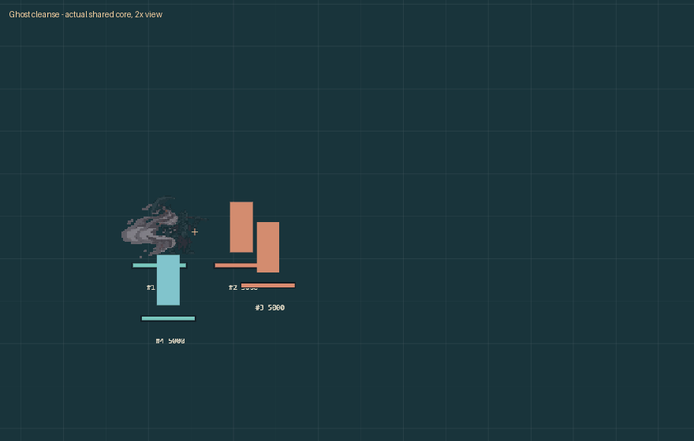
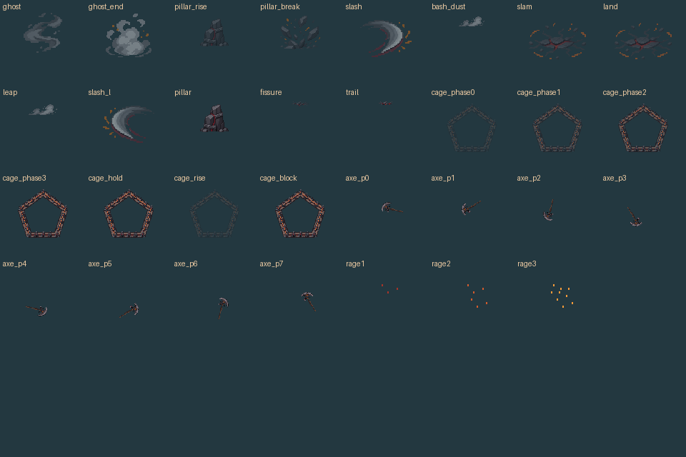

Revision 3 · slimmer, connected whole-body poses
Current proposal, not integrated into the game pack. These are complete redraws; the earlier split-body rig below is superseded. The fourth pose is unarmed for the thrown-axe phase.

Current proposal, not integrated into the game pack. These are complete redraws; the earlier split-body rig below is superseded. The fourth pose is unarmed for the thrown-axe phase.
Corrected appearance approved. Original imagegen source; mechanical extraction at stock melee height. Corrected body and skill presentation; installation and live acceptance remain separate.
Playable Lab

The Lab inspector shows all three animated ember tiers; the body is identical across tiers.


Approved appearance and corrected grip. Idle 4 · run 6 · attack 4 · Bulwark 4 · Bash 4 · ultimate 4 · hit 1 · death 6.


The playable Lab uses these effects with real core timing. Use Pillar combo, Cage hit, Ultimate miss and Ghost cleanse for sequences. Full pentagon and pillar presentation read completed state.
Open playable skill preview